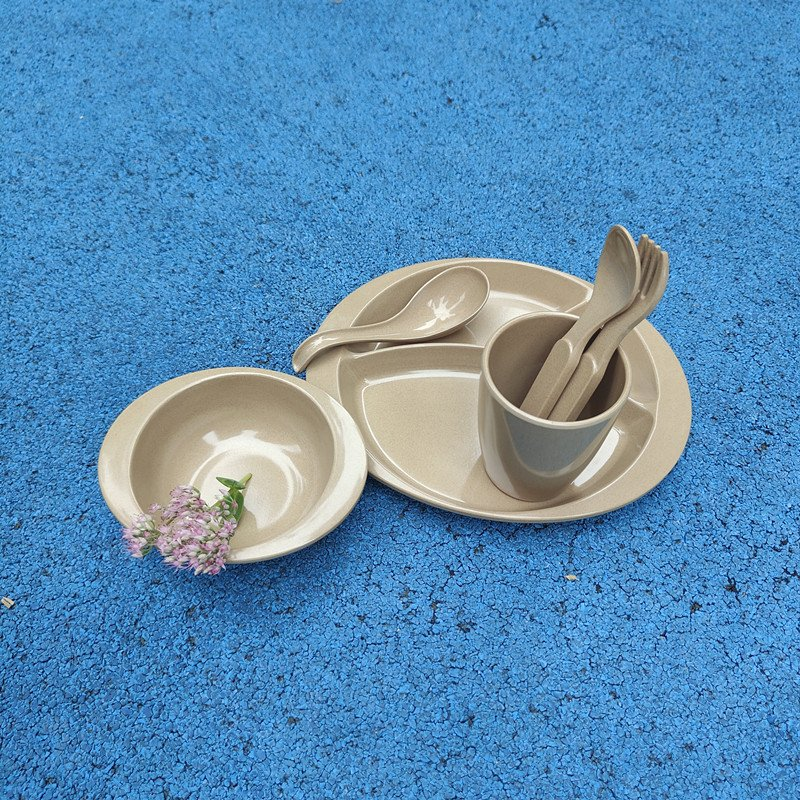
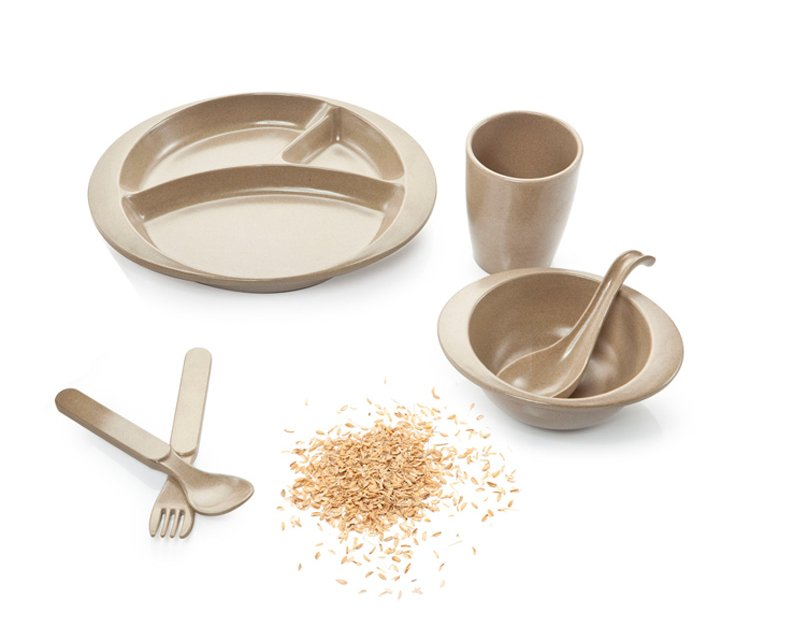
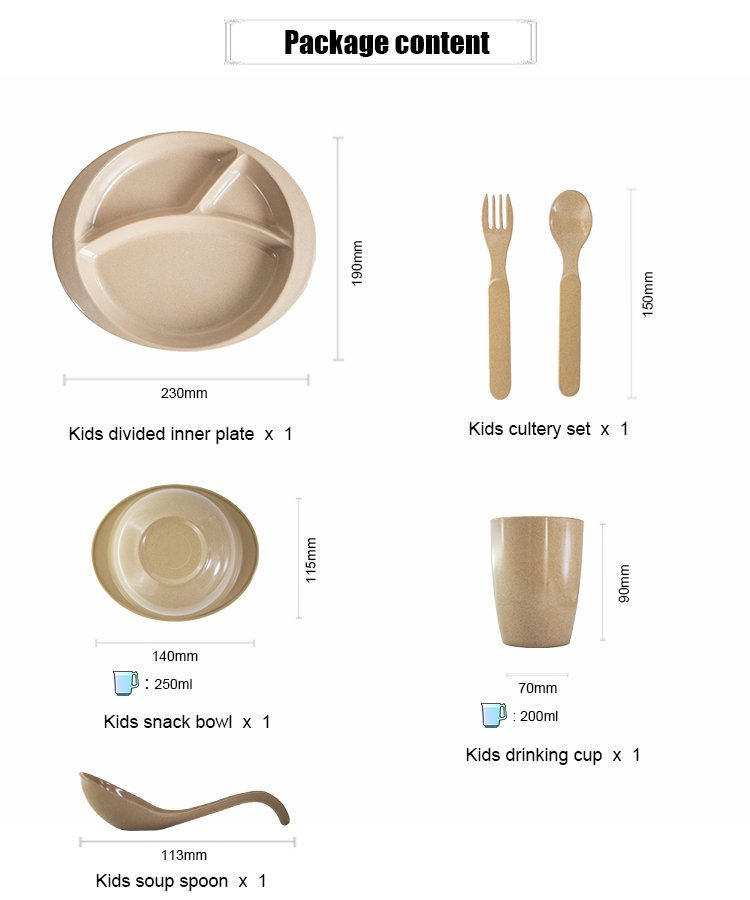

Rice Husk Kids Tableware: A Buyer's Guide for Daycares, Family Restaurants and Retail Brands
Children's tableware looks like a niche — until you price it. A kids' set sells at retail for more than the sum of its adult counterparts, gets replaced far more often, and is bought in bulk by a wave of institutional buyers: daycare chains, preschools, family-casual restaurants with kids' menus, hotel kids' clubs. It is also the most scrutinized dinnerware category on the shelf, because the end user drops it on the floor daily and the payer reads every word on the box. This guide walks through what a rice husk kids' set actually contains, the safety questions worth asking any supplier, and where this category is quietly growing.

The six-piece rice husk kids set — light enough for small hands, heavy enough in the hand to feel like real tableware.
Why Kids' Tableware Is Its Own Sourcing Category
Treat kids' dinnerware as a resized adult product and you will lose the sale. The requirements run in a different direction at almost every step. Weight matters more, because a two-year-old lifting a stoneware bowl is a hazard, not a diner. Edges and handles matter more, because small hands grip differently. Compartments matter more, because portion separation — "the broccoli doesn't touch the pasta" — is a genuine purchase driver for parents and a genuine operational driver for daycare kitchens. And breakage matters in a way adult tableware never experiences: a kids' plate in a daycare is not used, it is deployed, hundreds of times a month, at heights of roughly 60 centimeters.
This is where molded rice husk fiber earns its place in the category. The material is a processed agricultural byproduct — rice husks compressed with a food-grade starch binder — that is rigid enough to feel like tableware and light enough for a toddler to carry. When it is dropped, it tends to bounce rather than shatter, which is the single most quoted attribute our buyers hear back from their own customers. If you're new to the material itself, our overview of what rice husk tableware actually is covers the fundamentals.

From husk to table: the same natural fiber, before and after molding.
The Safety Conversation: What Buyers Actually Ask
Safety questions in this category are specific, and good suppliers should welcome them. The three that come up on nearly every kids' inquiry:
1. What binds the fiber together? Our kids' sets use natural rice husk fiber with a food-grade starch binder — no BPA, no plasticizers, and no melamine-formaldehyde resins. Any supplier in this category should state their recipe in writing; reluctance to do so is information in itself.
2. Is there food-contact test documentation for the exact product? Our tableware is SGS tested for food contact, with reports available on request — for the specific SKU and colorway you are buying, not a generic family certificate. We explain the difference in our guide to why BPA-free claims need paperwork behind them.
3. How does it age in daily use? Reusable plant fiber tableware is designed for repeated washing and years of service — and because it is reusable rather than single-use, it avoids the entire single-use plastic compliance conversation that schools and childcare regulators are increasingly focused on. For the end-of-life question buyers also ask, see our explainer on whether rice husk products are biodegradable.
Inside the Six-Piece Set
Our rice husk kids set packs five component types into one retail-ready kit. Exact specifications, straight from the current production spec sheet:
| Component | Dimensions | Capacity / Weight |
|---|---|---|
| Kids divided inner plate | 230 × 190 mm | 250 g |
| Kids snack bowl | Ø 140 mm | 250 ml |
| Kids drinking cup | Ø 70 × 90 mm | 200 ml |
| Kids spoon | 113 mm | 25 g |
| Kids spoon-fork | 150 mm | 45 g |
Five components, six pieces: the divided plate, snack bowl, drinking cup, soup spoon, spoon and spoon-fork cover a full day of meals from breakfast to dinner.

Packaging content and dimensions — the diagram most of our retail buyers reprint directly on the gift box.
Where This Category Actually Sells
Daycare and preschool programs. Institutional buyers order by the classroom, replace by the semester, and care about three things: break resistance, stackability for dishwasher-less wash stations, and the ability to document material safety to parents. A reusable set that survives a full school year beats a disposable alternative on both budget and optics — and as regulators tighten single-use rules in childcare settings, that gap keeps widening.
Family restaurants and kids' menus. A family-casual chain serving a thousand kids' meals a week goes through an enormous amount of children's tableware, and melamine's continuing image problem in food service has buyers actively looking for alternatives. A natural-fiber kids' set photographs well on the kids' menu, survives the high chair floor test, and gives the marketing team a sustainability story for the one audience — parents — that reads it most closely.
Retail private label. This is where the category's economics shine. Kids' sets are gift-boxed, giftable, and seasonally strong — Christmas, Easter, back-to-school. The full set retails at a price point that supports healthy margin over FOB, and the box is small enough that a mixed container of adult tableware plus kids' gift sets loads beautifully. Buyers building their first line usually start from our container loading and MOQ guide to plan the mix.
Customization: The Part Retail Buyers Care About Most
The set's natural rice-husk beige is the default colorway, but color is where private-label brands differentiate — pastel palettes for retail, brighter primaries for daycare programs. We mold custom colors, print or emboss logos, and produce custom gift boxes, including box shape and pattern, from our 5,000 m² facility. For retail buyers, the gift box is not an afterthought: it is the surface that turns a six-piece utility product into a birthday present, and it deserves the same design attention as the set itself.
Quick Checklist Before You Place a Kids' Tableware Order
✅ Ask for the binder recipe in writing — food-grade starch, no melamine-formaldehyde
✅ Request food-contact test reports for the exact SKU and color, not a family certificate
✅ Confirm the piece count and dimensions on the packaging diagram match the physical set
✅ Check stackability and nesting — daycare storage is vertical, not horizontal
✅ Plan the gift box early if you're retail: it drives the price point and the margin
✅ Ask for a physical sample and drop it. That's the whole test.
Frequently Asked Questions
Is rice husk tableware safe for children?
It is built for that use: natural rice husk fiber with a food-grade starch binder, no BPA and no plasticizers, and SGS food-contact testing for the specific product with reports available on request. Rather than taking any supplier's word — including ours — make the test report for your exact SKU a condition of the purchase order. That is standard practice in this category, and any factory that resists it is telling you something.
Can kids' rice husk tableware go in the microwave?
It is microwave-safe for reheating — around 3 to 5 minutes, and never microwave it empty. That said, the more common question from daycare and restaurant buyers is washing, and here the honest answer is that plant fiber tableware is easy to clean in warm soapy water and tolerates light dishwasher cycles; for high-volume dishwashing programs we recommend confirming care instructions for your specific SKU with us before rollout.
What is the MOQ for custom kids' sets?
Standard sets ship at accessible wholesale MOQs; custom colors, logo printing and custom gift boxes have their own minimums depending on the molding and printing steps involved. Send us your brand requirements and target quantity and we'll quote the configuration — the container loading guide linked above explains how kids' gift sets mix with adult tableware SKUs in a single container.
What age is the set designed for?
The proportions — plate depth, handle lengths, cup diameter — suit toddlers through early primary school, roughly ages 1 to 7. Older children generally graduate to adult-size pieces; our standard bowls and cups work well for that transition, which is another reason retail buyers bundle kids' and adult SKUs in one order.
Sourcing kids' tableware for your market?
Tell us your channel — daycare, food service or retail — and your target volumes. We'll send the kids' set sample card, our SGS food-contact reports, custom color and gift-box options, and a quote built around your container mix.
Send InquiryPublished by Kaixin Eco Team · Shenyang Kaixin Technology Co., Ltd. — eco-friendly rice husk (plant fiber) dinnerware manufacturer since 2016, shipping to 40+ countries with full OEM/ODM support. Going deeper: browse the full rice husk product range or start from the Kaixin eco tableware homepage.